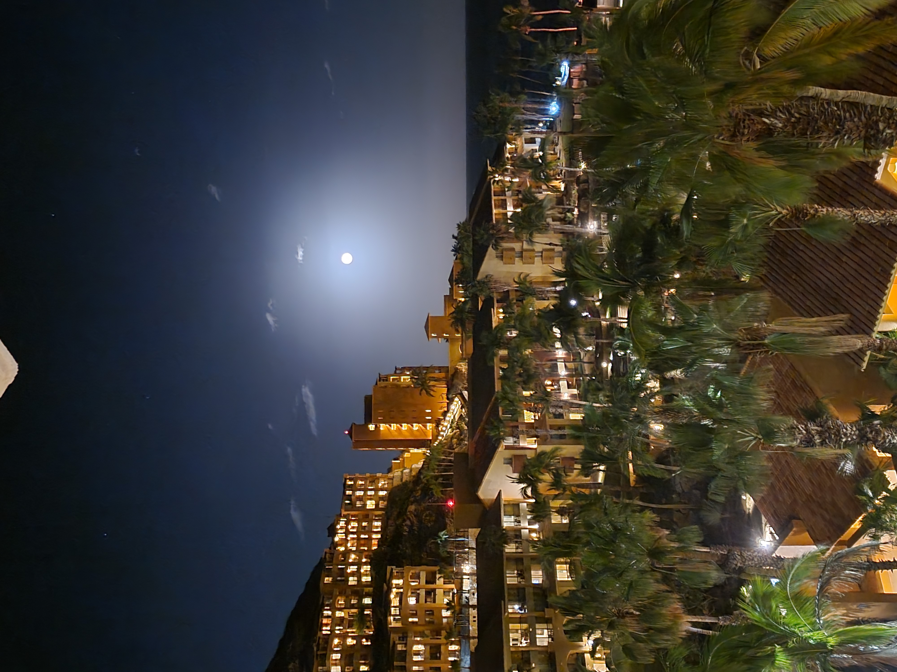
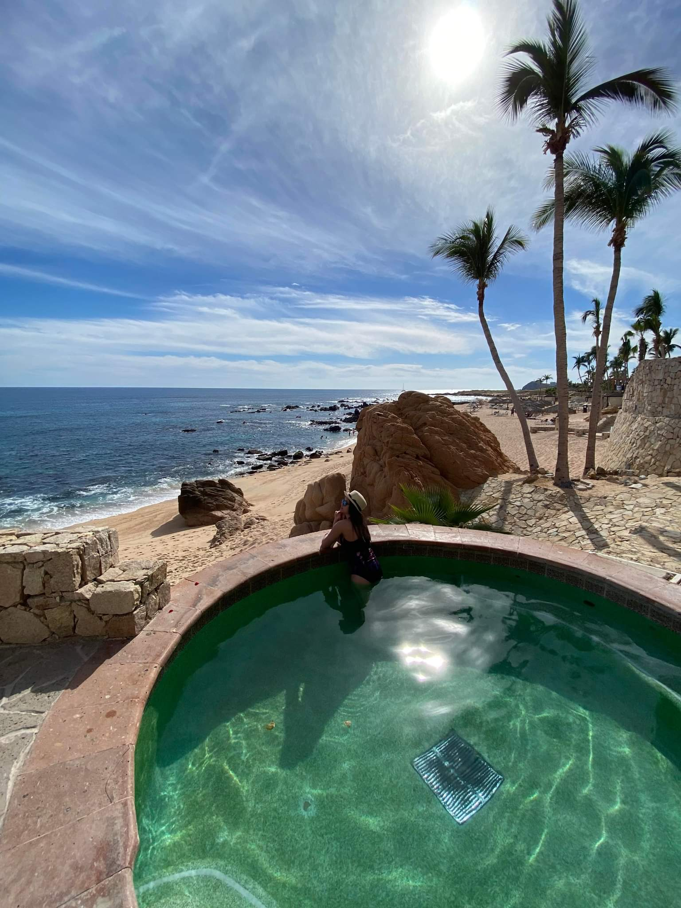

Day 1-2: Arrival in Grand Fiesta Americana Los Cabos
The wait for the luggages at the airport was grueling, and we could not wait to rest our backs on a soft bed.
After a somewhat long drive through the arid desert, my family and I reached the resort. I was very skeptical before
arriving to the resort; however, it quickly faded when I stepped in and met the staff. Actually, my first impression
of the place was at the gate entrance when I was still in the van. Outside the van, I saw two kittens resting by the
porter's lodge. They seemed to be quite content and friendly with the security guard. For me, this gave off the
impression that the staff at this resort were kind and trustworthy.
Inside the main entrance of Grand Fiesta Americana Los Cabos, there was a large, Mexican folk-art inspired Christmas
tree, decorated with colorful mini guitarras, dolls wearing traditional Mexican dresses, and beautiful flowers at the
base. While we waited for our room, we ordered some mimosas and champagne and looked into the ocean. I had never been to
a resort prior to this one, but I began to understand why people enjoyed going to them.


Day 3: Exploring Land's End and the Marina Cabo San Lucas
We spent the first couple of days basking in the sun and delighting in the lavish spread of
the resort's all-inclusive gourmet offerings (which was absolutely fantastic). On the third
day, we set out for Land's End and Marina.
Land's End is one of Cabo San Lucas's most iconic
attactions, and it is located at the southernmost tip of Baja California. Our van took us to
the pier where the boat tour was located. Our tour guide, Carlos, drove us to some popular
spots, including Roca Pelicanos, Neptune's Finger, Playa de los Amantes, Playa del Divorcio and
El Arco. He also showed us the sea lions resting on the rock in the Rookery, or La Lobera. I
remember that experience vividly - the smell of sea lion was quite strong. The intensity of the
smell may have been due to heaping amount of sea lions.
After our amazing boat tour, we stopped by the Marina Boardwalk. I had a terrible sunburn that
spread throughout my entire body, so my sister and I looked for a convenience store. Luckily I
found a pharmacy, although everything was in Spanish. It didn't help that the pharmacist only
spoke Spanish. I found a pink bottle that smelled like calamine lotion and called it a day.